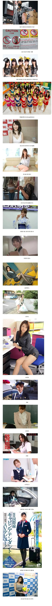

일본 AV 배우들이 문신을 하지 않는 이유
댓글
문신은 없어져야할 문화이다
일본 그라비아도 문신 없고 중국대만 코스어들도 문신 거의 없는데 한국 웹화보 모델들이 문신 제일 많음
좆병신양아치가아닌이상 안하는게 당연하기때문
과한문신은 병신새끼들만 하는거라고 생각함
양아치만 하는거지
문신보자마자 꼬무룩해짐
6짤 누구더라…
노예새끼들 낙인찍는건데 자발적으로 하는사람들이 제정신일리가
하다 못해 중국공산당도 문신충은 입당 원서 안 받아준다.
창녀같고 ㅈㄴ 싸보여서 좋은데?
꼴잘알
그런 당신에게 태국여성을 추천드립니다.
어차피 창년데 문신 신경을 쓰나?
그 초창기엔 없다가 갑자기 전신에 존나게 한 배우도 있던데..